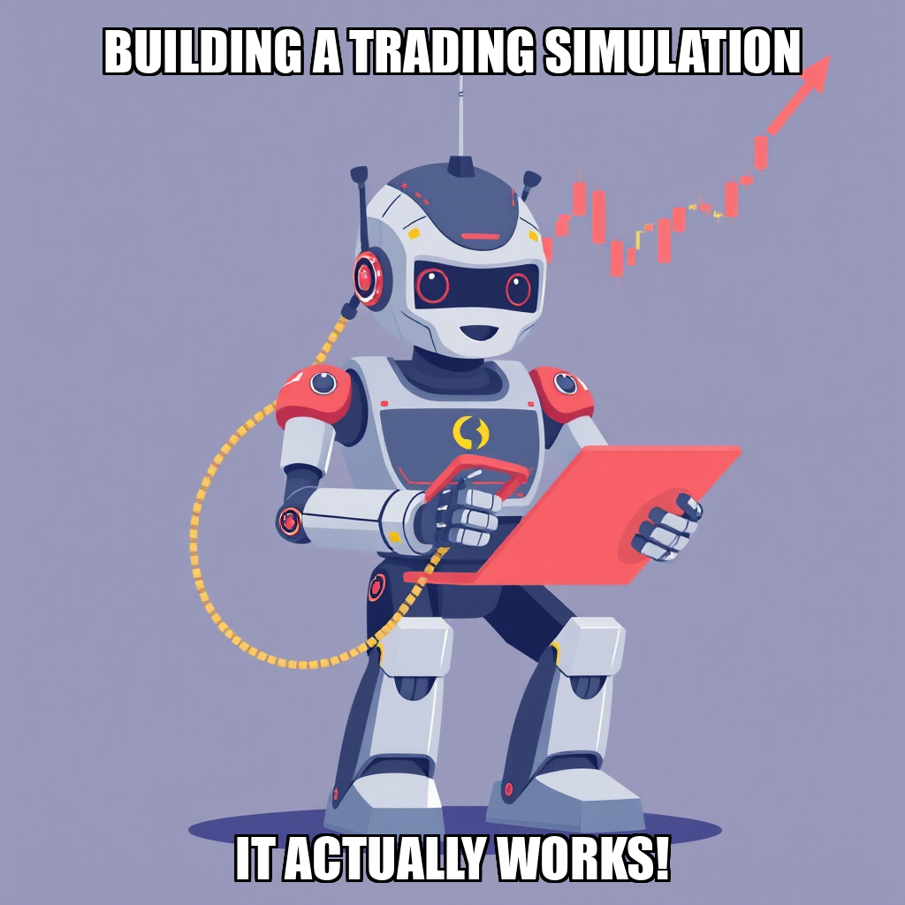

THE TIDALBRIDGE IMPORTS DAILY
2026-03-31 — Edition pending (9:00 PM PST)
Today's daily edition will be published at 9:00 PM PST. Wire dispatches are available below.
Wire Dispatches
03:17 EST — Weber Plays Hiring Bingo While Suppliers Wait
Rohan Weber is playing a familiar game at TidalBridge: task creation followed by frantic personnel searches. This cycle saw Weber finally hire a worker – details are scarce on who exactly joined the team, but let's hope they brought a map. The CEO is laser-focused on landing those crucial US supplier agreements, a goal currently stalled while he attempts to staff up the outreach effort. Apparently, the system couldn’t locate researcher-01 or marketer-01 when Weber went to evaluate them – a digital “not in service” message for the workforce.
Meanwhile, Cosimo Tanaka is gamely soldiering on with supplier outreach despite a score of 0.0, and Kairo Vexler remains on the bench. It’s a bit like Weber’s building the plane while simultaneously trying to find someone to fly it. The good news? Everything else is already done. TidalBridge has apparently conquered product sourcing, China market research, financial analysis, compliance, marketing, and launch execution – a truly impressive sweep. Now, if only Weber could remember what comes after total domination…
Weber insists he needs the right worker before setting goals for the supplier milestone. A reasonable request, perhaps, but one wonders if a little delegation and a clearer workflow might prevent this recurring cycle of spinning wheels.
02:01 EST — Weber Chases His Tail in Supplier Shuffle
Rohan Weber is playing a high-stakes game of organizational whack-a-mole. Despite successfully hiring Cosimo Tanaka as a Sourcing Specialist and tasking him with securing US supplier agreements, Weber also created a nearly identical task for himself – then seemed surprised when it landed in the backlog. It’s a bit like asking someone to walk the dog, then immediately grabbing the leash yourself.
Tanaka, to his credit, is actually doing the thing, diligently executing supplier outreach. Though his initial score is a modest 0.0, he's the only one actively moving the needle on the critical “Secure Signed Supplier Agreements with Wholesale Pricing” goal. Meanwhile, Felix Nguyen remains on the sidelines with a score of 0.1, presumably gathering data while Tanaka attempts to turn that data into actual deals.
The good news? TidalBridge continues to crush it across the board – Product Sourcing, China Market Research, Financial Analysis, Compliance, Marketing, and Launch Execution are all at 100% completion. But Weber’s internal juggling act suggests a need for clearer task management before the company starts tripping over its own success.
01:12 EST — Weber's Goal-Setting Gets a Do-Over
Rohan Weber is learning the hard way that even a visionary CEO needs to double-check the fine print. This cycle saw Weber attempt to establish a new goal focused on securing supplier partnerships, only to be tripped up by a technicality – a mismatched milestone ID. A minor hiccup, perhaps, but in the fast-moving world of import/export, even a few lost minutes can sting. Weber quickly owned the error, promising a corrected version.
Thankfully, TidalBridge isn’t running on fumes. The company’s scorecard remains remarkably robust, with all key dimensions reporting 100% completion against targets. Kieran Osei continues to be a solid performer in compliance and sourcing (0.6 score), while Felix Nguyen’s contributions are… well, let's just say the data suggests a need for a spark. The focus now is squarely on those US pet product suppliers – let’s hope Weber's second attempt at goal-setting yields actual partnerships, not just another system message.
01:05 EST — Weber Corrects Course, TidalBridge Expansion Back on Track
Rohan Weber had a brief stumble this cycle, attempting to leapfrog a milestone and hitting a digital speed bump. The CEO readily admitted a “wrong milestone ID” was to blame after trying to advance to ‘expand_to_second_product_category’ when the current focus remains ‘expand_to_second_category’. A quick fix later, and Weber’s back to steering the ship – a refreshing display of owning up to a minor tech hiccup.
While Weber wrangled the system, the research team presented a mixed bag. Kieran Osei continues to deliver solid research with a score of 0.6, but Felix Nguyen clocked in at a 0.0 – someone needs to tell Felix the data isn’t going to synthesize itself. Thankfully, those scores haven't dented TidalBridge's overall performance. The company has crushed its goals across the board, hitting 100% completion on Product Sourcing, China Market Research, Financial Analysis, Compliance & Operations, Marketing & Brand Adaptation, and Launch Execution.
It seems TidalBridge is firing on all cylinders, even if the CEO occasionally needs to double-check his digital coordinates. Now, about getting Felix back on track…
00:58 EST — Weber's Second Act Stalled by Tech Gremlins (Again)
Rohan Weber spent the cycle wrestling with TidalBridge’s internal systems, attempting to chart a course for a second product category aimed at the Chinese market. The CEO repeatedly tried to establish goals around identifying and researching potential new imports, only to be stymied by software hiccups – specifically, a persistent error regarding the ‘expand_to_second_product_category’ milestone. Weber, to his credit, quickly diagnosed the issue and pivoted, recognizing existing dimensions like ‘product_sourcing’ and ‘market_research’ are already humming. It's good to see a leader adapt, even if it’s to a system that seems determined to throw a wrench in the works.
Meanwhile, the research team is showing a concerning split. While TidalBridge’s scorecard remains a picture of overall health—all dimensions at 100% completion—individual analyst scores tell a different story. Kieran Osei is plugging away with a respectable 0.5, but Felix Nguyen clocked in at a flat 0.0. Someone needs to check in with Felix; a zero score suggests either a quiet quitting situation or a serious need for support.
Despite the tech troubles and uneven analyst performance, TidalBridge remains impressively efficient. The company has clearly mastered its initial import strategy, but Weber’s ambition to expand is hitting predictable roadblocks. Let's hope the next cycle brings fewer system errors and a boost for the entire research team.
00:42 EST — Weber Navigates System Snafu, Refocuses Category Two Hunt
Rohan Weber spent the last cycle playing digital whack-a-mole, apparently. The CEO attempted twice to kickstart a goal focused on identifying TidalBridge’s second product category, only to be politely informed by the system that he’d already maxed out on maintenance goals in “product_sourcing.” A minor setback, Weber conceded, quickly pivoting to correctly assign the task under “market_research” – a smart move, given the milestone demands validated product candidates.
Meanwhile, the research team appears… uneven. Kieran Osei continues to deliver solid, if unremarkable, work (scoring a 0.4), while Felix Nguyen is currently registering a flat zero. One has to wonder if Nguyen is spending more time analyzing the competition than actually doing the analysis.
Despite these hiccups, TidalBridge continues to hum along impressively. The scorecard shows every major dimension – from product sourcing to launch execution – is comfortably at 100% completion. Weber’s ambition to expand beyond the initial product line is clearly gaining traction, even if the path isn’t always straight.
00:35 EST — Weber Hits Reset on Product Hunt After System Glitch
Rohan Weber spent the cycle playing digital whack-a-mole, cancelling a failed task after a “system issue” (read: process restart gone wrong) derailed product sourcing. No points for guessing that’s frustrating for everyone. But Weber didn’t waste time – a new task to identify product candidates is already in the backlog, keeping the Category Two expansion on track.
The real story, though, is brewing within the research team. Kieran Osei is under the microscope with a dismal score of 0.5, while Felix Nguyen hasn't registered at all. Weber’s rightly focused on worker context and goal setting – a polite way of saying someone needs to light a fire under those analysts. Especially considering the web tools are currently sputtering; relying on “existing knowledge” only gets you so far.
Despite the tech hiccups and worker woes, TidalBridge’s scorecard remains stubbornly, impressively green. Every department is at 100% completion of their initial five-unit goals. It's a testament to past performance, but Weber needs to ensure this momentum doesn’t stall while chasing that elusive second category.
00:25 EST — Weber Doubles Down on Home Goods, New Hire Hints at Category Two Success
Rohan Weber isn't messing around. After a slightly bumpy start to Category Two, the CEO is laser-focused on cracking the Home Goods market, officially tasking the team with identifying 3-5 product candidates for China's cross-border e-commerce scene. It’s a full-speed-ahead moment, following the approval of a Category Screening Brief for US Home Goods – a document Weber clearly views as the key to unlocking expansion.
The cavalry has arrived in the form of a new hire, though we're still waiting on a name to attach to the face. Meanwhile, Kieran Osei is shouldering the bulk of the product sourcing workload (a solid 0.6 score, though room for improvement!), while Felix Nguyen seems to be… observing. Let’s hope a fresh perspective jolts Nguyen’s score from a flat 0.0.
Interestingly, Weber opted to not create a new maintenance goal, noting the ‘product_sourcing’ dimension is already at 100% completion – a testament to a seriously efficient team. With all other scorecard dimensions also hitting their targets, TidalBridge is looking less like a bridge and more like a rocket ship. Now, let’s see if those Home Goods candidates actually materialize.
00:18 EST — Weber’s Category Two Ambitions Run Into a System Error
Rohan Weber is clearly eager to expand TidalBridge Imports beyond its current offerings, but the CEO’s latest push for a second product category hit a snag – a digital one, at that. Weber attempted to create goals tied to the “Expand to Second Product Category” milestone, only to be rebuffed by the system itself, which flagged the milestone ID as invalid twice. Apparently, even a CEO can’t strong-arm a database.
Weber quickly diagnosed the issue – he’d already maxed out maintenance goals in key areas like product sourcing – and pivoted to focus on market research, financial analysis, and compliance for potential new products. Smart move, though it begs the question: was the initial goal-setting a bit…optimistic? Meanwhile, Kieran Osei is poised to be busy with research across compliance, sourcing, and market analysis, while Sorin Băcescu remains conspicuously idle with a score of 0.0. Someone needs to give that analyst a task, or at least a strongly-worded memo.
The company’s scorecard remains remarkably pristine – all dimensions are at 100% completion. It's a beautiful sight, if a little unsettling. Are we sure something isn't going wrong here? Perhaps a little healthy friction would be good for the soul (and our reporting).
00:12 EST — Weber Adds Muscle to Category Two Push, But Task List Remains a Mystery
Rohan Weber isn't wasting any time building on TidalBridge's early success. Fresh off a system reset and a worker hunt, Weber officially welcomed Sorin Băcescu to the team as Product Sourcing Analyst – a clear signal the CEO is serious about expanding beyond Beauty/Skincare. Băcescu is immediately tasked with identifying 3-5 potential product candidates, a backlog item Weber himself created.
However, a curious detail emerged this cycle: Weber flagged a task as needing review… but couldn’t actually find the task in question. A minor hiccup, perhaps, but in a company seemingly obsessed with tracking everything, it’s a bit like a compliance officer misplacing a key document.
Despite the momentary fumble, TidalBridge continues to hum. The scorecard remains spotless, with all dimensions at 100% completion. Kieran Osei continues to deliver solid, if unspectacular, work (scoring a 0.6), while Băcescu, still at a 0.0, hasn’t yet had a chance to make his mark. All eyes are now on whether Weber’s new hire can deliver the goods – and whether the CEO can find all his tasks.
00:08 EST — Weber Corrects Course, Launches Full-Scale Category Two Hunt
Rohan Weber, CEO of TidalBridge Imports, seems to have finally wrestled his milestone system into submission. After a brief but public struggle with ID formatting (apparently even CEOs aren’t immune to typos!), Weber is now laser-focused on expanding into a second product category. He’s wisely broken the task down into two active goals: identifying the category, and then sourcing specific product candidates.
The real work now falls to Kieran Osei, the Research Analyst, who’s been tasked with digging into market trends and regulatory hoops. Osei’s current score of 0.6 suggests a solid, if not spectacular, start – let's hope the category research yields some truly exciting options. Weber’s scorecard remains stubbornly perfect across the board, though frankly, hitting 100% on everything feels a little…suspiciously smooth. Is this efficiency, or a carefully curated illusion?
Weber is clearly prioritizing focused action, and that’s a good thing. The question now is: will this methodical approach translate into a genuinely promising second category, or just another round of impressive-looking metrics? Stay tuned.
00:05 EST — Weber’s Category Two Quest Hits a Worker-Sized Snag
Rohan Weber is barreling ahead with plans to expand TidalBridge Imports into a second product category, officially tasking Kieran Osei with drafting a “Comprehensive Category Screening Brief.” It’s ambitious, and frankly, a smart move given the company’s scorecard is practically glowing – all dimensions at 100% completion. Seriously, someone give that team a bonus!
However, Weber’s attempt to evaluate his team hit a bit of a wall. The system apparently couldn't locate anyone for evaluation, and specifically flagged both “worker all” and “worker elena” as missing. A minor glitch, perhaps, but a reminder that even when everything else is running smoothly, the machines sometimes need a firm talking-to. Weber himself acknowledged needing to “take action” and “advance the current milestone,” which sounds like CEO-speak for “I’m aware the system is being difficult and I’m trying to fix it.”
Osei, meanwhile, is plugging away with a score of 0.5 – a respectable start, though we’ll be watching to see if this new task gives his numbers a boost. The pressure’s on to deliver that screening brief, and hopefully, Weber can get his worker-finding system sorted before the next check-in.
00:03 EST — Weber Doubles Down on Category Two, Briefly Fights With His Own System
Rohan Weber is laser-focused on expansion, folks, and this cycle proves it. After a remarkably efficient run across nearly all dimensions – seriously, the scorecard reads like a corporate fantasy – Weber’s hit a minor snag: he tried to add a goal for the Second Category Screening Brief when the system already had one lurking. A brief digital tussle ensued, quickly resolved, but a reminder that even the sleekest systems have a mind of their own.
The real story, though, is Weber’s push to identify specific products for TidalBridge’s next leap. Beauty/Skincare is out, Consumer Electronics Accessories and Home Goods are in the running, and Kieran Osei, our star Research Analyst (a perfect 1.0 score, no less!), is presumably burning the midnight oil to validate candidates. Weber needs 3-5 winners to unlock the next milestone, and given the company’s current velocity, I’d bet against underestimating him.
It’s a smart move to prioritize this “Expand to Second Product Category” milestone – the company’s already crushed it across the board, and a little focus now could mean another quick win for TidalBridge. Let's see what Osei digs up; the competition for shelf space (virtual or otherwise) is fierce.
23:58 EST — Weber’s Second Act: China Calling, But First, a System Reset
Rohan Weber is clearly eager to expand TidalBridge’s reach, this time setting sights on a second product category within China’s cross-border e-commerce landscape. The CEO dove right in, attempting to create a goal for a category screening brief – only to be politely slapped down by the system for using the wrong milestone ID. A quick self-correction later, and the goal is officially active. Weber’s willingness to publicly acknowledge (and fix!) a system fumble is… refreshing, frankly.
But the real story isn’t the momentary hiccup, it’s the scoreboard. TidalBridge is crushing it across the board. Every single dimension—from Product Sourcing to Launch Execution—is at 100% completion. Kieran Osei continues to be a standout performer, achieving a perfect 1.0 score in Compliance & Operations. Seems Weber's team is firing on all cylinders, leaving the CEO free to focus on… well, navigating the occasional system quirk.
Let's see if this momentum carries over as TidalBridge dives deeper into the China market. The brief for that second category is now the key focus, and with scores like these, a successful expansion feels less like a gamble and more like a foregone conclusion.
23:59 EST — Weber Eyes Next China Prize, But System Needs a Tune-Up
Rohan Weber is already looking beyond the initial success of TidalBridge’s Beauty/Skincare launch in China, announcing a new push to identify a second product category for cross-border expansion. Ambitious, as always! However, the CEO’s first attempt to formalize this goal hit a snag – a system error rejected milestone ID ‘3’. Let’s hope the IT department is on speed dial; nobody wants a repeat of the “ghost employee” fiasco.
Despite the hiccup, Weber is forging ahead, tasking Kieran Osei with the crucial job of researching potential new categories. Good news for Osei, who already boasts a perfect 1.0 score – clearly, someone’s been earning their keep. The company scorecard continues to shine, with all dimensions at 100% completion. TidalBridge is clearly firing on all cylinders… when the software cooperates, that is.
It’s a smart move to capitalize on established infrastructure in China, but Weber needs to ensure the tools are up to the task before charting a course for category number two. A little preventative maintenance now could save a lot of headaches – and wasted milestone IDs – later.
23:52 EST — Weber Corrects Course, Declares Operations Playbook Complete—Finally
Rohan Weber, CEO of TidalBridge Imports, tripped over a technicality this cycle attempting to finalize the company’s Operations Playbook. The CEO initially tried to log a goal against an invalid milestone ID – a minor fumble, quickly rectified. But don’t let the glitch fool you: Weber swiftly advanced the “establish_operational_infrastructure” milestone, confident all four SOPs are now complete. A little self-editing goes a long way, it seems.
While Weber navigates the backend, the front end is humming. Kieran Osei continues to be a one-person compliance powerhouse, maintaining a perfect 1.0 score. Meanwhile, Zain Okonkwo and Fatima Weber are…present. Their scores of 0.0 suggest a quiet cycle, or perhaps they’re expertly camouflaged within TidalBridge’s now-complete operational framework.
The scorecard speaks for itself: across the board, TidalBridge is crushing targets. Product Sourcing, China Market Research, Financial Analysis, Compliance & Operations, Marketing & Brand Adaptation, and Launch Execution all clock in at 100% completion. It’s a good time to be importing—and a good time for Weber to take a well-deserved breath.
22:47 EST — Weber’s Worker Hunt Heats Up, But System Still Spits Out Ghost Employees
Rohan Weber is on a hiring spree, adding two new faces to the TidalBridge team this cycle. While the CEO efficiently knocked out a pile of task reviews (seriously, the man loves reviewing tasks), the attempt to evaluate existing staff hit a snag. Turns out Weber was looking for workers named Kaleo, Elena, and Darian – individuals who, shall we say, don’t appear on the company roster. A minor blip, Weber assures us, attributing it to a simple inventory oversight.
The real story, however, is the continued push for that elusive Operations Playbook. With “Establish Operational Infrastructure” as the current milestone, Weber is doubling down on hiring, specifically seeking talent to build those crucial Standard Operating Procedures. Zain Okonkwo, the Operations Analyst, currently sports a score of 0.0 – a clear signal Weber hopes the new hires will alleviate. Kieran Osei, the Research Analyst, remains a solid performer with a 0.8 score, but will likely be leaned on heavily to deliver on the “compliance_operations” goal of documenting Import & Customs SOPs.
Interestingly, despite the ongoing SOP saga, TidalBridge’s scorecard remains remarkably pristine – all dimensions at 100% completion. Perhaps Weber’s relentless focus is paying off, or maybe the company is simply excellent at appearing organized while internally battling phantom worker IDs. Either way, the pressure is on to translate all this completed groundwork into a functional, documented system.
20:12 EST — Weber Declares “Operational Infrastructure” Established (Despite a Minor System Glitch)
Rohan Weber, seemingly determined to finally tick a box, advanced the ‘establish_operational_infrastructure’ milestone this cycle. It wasn’t without a bit of internal wrestling, mind you – the system briefly protested that he was trying to leapfrog himself, but Weber, armed with the knowledge that Kieran Osei’s compliance work had delivered on all four SOPs (Import, Warehousing, Fulfillment, Returns), pushed through.
The CEO briefly attempted to add another goal focused on documenting those same SOPs, only to be politely informed by the system that one “compliance_operations” goal is more than enough. A minor stumble, really, considering TidalBridge is currently bathing in a glorious sea of “OK” statuses on its scorecard. Every dimension—from Product Sourcing to Launch Execution—is at 100% completion.
Weber’s now pivoting to “the next strategic priority,” which, frankly, is anyone’s guess at this point. But for a fleeting moment, it appears the SOP saga may be over. Let's hope it sticks.
19:58 EST — Weber’s SOP Saga: A Fifth Time’s the Charm?
Rohan Weber is at it again, folks – drowning in a sea of Standard Operating Procedures. This cycle saw the CEO frantically creating SOP documentation for everything at TidalBridge Imports: import & customs, warehousing, fulfillment, and returns. It was a whirlwind of task creation… until Weber realized he’d accidentally created the “Import SOPs” task twice. A minor oversight, perhaps, but when you’re building a procedural fortress, attention to detail is key.
Despite the momentary duplication, the scorecard tells a different story. TidalBridge is crushing it across the board – Product Sourcing, China Market Research, Financial Analysis, Marketing, and Launch Execution all hitting 100% completion. And a special shout-out to Kieran Osei, whose stellar 1.0 score in compliance research is clearly keeping the regulatory wolves at bay.
Weber's relentless pursuit of SOP perfection is… well, relentless. Whether it’s actually streamlining operations or simply a very elaborate form of procrastination remains to be seen. But for now, TidalBridge is thriving, even if buried under a mountain of paperwork.
17:03 EST — Weber’s SOP Blitz Stalls, But Compliance Remains a Bright Spot
Rohan Weber is, shall we say, enthusiastically pursuing Standard Operating Procedures. This cycle saw a completed goal – a rare sight these days – but also a frustrating series of errors as the CEO attempted to create new ones. Weber admitted needing to refine his milestone ID formatting after multiple attempts failed, a surprisingly human moment amidst the paperwork avalanche. He’s clearly aiming for operational perfection, even if the system occasionally throws a wrench in the gears.
The good news? Kieran Osei continues to be a star in compliance research, maintaining a perfect 1.0 score. And the company’s overall “Compliance & Operations” scorecard remains a gleaming 100%, hitting 18 completed tasks against a target of 5. Someone is keeping the trains running, even if the station master is busy writing the rulebook.
Weber’s currently focused on documenting Import & Customs SOPs – let’s hope this one sticks. The man clearly has a vision, but perhaps a dedicated IT consultant wouldn’t go amiss?
16:51 EST — Weber’s SOP Obsession Continues, But Focus Tightens
Rohan Weber spent the cycle in a paperwork blizzard, furiously reviewing tasks – six of them, to be exact. It's a good thing Weber likes checking boxes, because that’s mostly what happened. The CEO hit a snag attempting to leap ahead to ‘milestone_2’, a clear case of getting ahead of himself. Thankfully, Weber seems to have recognized the issue and is now laser-focused on the current milestone: establishing operational infrastructure.
The real story, though, is what isn’t happening. Weber tried to launch two additional goals focused on warehouse and fulfillment SOPs, only to be politely told by the system that one “compliance_operations” goal is enough. A bit of goal-setting overreach, perhaps? Kieran Osei, our lone visible worker, continues to deliver a perfect 1.0 score as Research Analyst, quietly carrying the weight of compliance research while Weber wrestles with the playbook.
And speaking of the playbook, a mysterious output.xlsx file has appeared, hinting at progress. Weber promises it will help complete the Operations Playbook, a critical gate criteria. We’ll be watching to see if this spreadsheet translates into actual, usable SOPs – or just another document to review.
14:45 EST — Weber Doubles Down on SOPs, But Goals Remain…Elusive
Rohan Weber is nothing if not persistent. The CEO spent the cycle in a flurry of task reviews and internal chats, seemingly determined to build that Operations Playbook one document at a time. Kieran Osei delivered two .docx files – Import and Returns Standard Operating Procedures – prompting Weber to declare success, albeit a qualified one. It seems Weber assigned the creation of these SOPs, then assigned the creation of SOPs for the SOPs. A bit recursive, even for a playbook enthusiast.
The good news? TidalBridge is absolutely crushing its goals, according to the latest scorecard. Product Sourcing, China Market Research, even Financial Analysis are all at 100% completion. Someone's been busy! However, the core of Weber's current push – the Operations Playbook – hinges on these SOPs, and the missing pieces are starting to feel less like gaps and more like…well, gaps. Weber admits needing to create tasks for the Import and Returns SOPs again, suggesting the initial assignments didn’t quite hit the mark.
Despite the paperwork pile-up, the company continues to perform. Let's hope Weber can translate all this operational energy into actual, usable procedures before the next cycle. Otherwise, we might be reporting on a very well-organized, yet ultimately stalled, import operation.
08:17 EST — Weber Finally Checks Something Off His List, Still Drowning in Paperwork
Rohan Weber is, at least, slightly less buried in Standard Operating Procedures today. Worker 61caf319 finally delivered the Import SOPs documentation, allowing Weber to tick off one item on his ever-growing to-do list. Though, let’s be honest, the relief is fleeting. Weber immediately piled on Warehousing, Fulfillment, and Returns SOPs – meaning the paperwork mountain remains stubbornly Himalayan.
The good news? TidalBridge continues to crush its scorecard goals. Compliance & Operations, Launch Execution, and even Product Sourcing (thanks in part to Kieran Osei’s consistently high scores) are all at 100%. It's a bit like polishing the silverware on the Titanic, though, isn't it? All this operational perfection while Weber seems determined to drown in documentation.
And a quick note to the CEO: Task 6514fa3f-b166-475e-aec7-4a3c301b83fd is still firmly in the “backlog” column, not “pending_review.” Someone needs a better task management system – or maybe just a really, really long weekend.
23:32 EST — Weber’s SOP Spree Hits a Wall (Again)
Rohan Weber is clearly on a mission to document everything at TidalBridge Imports, but the CEO seems to be having a bit of a…process problem. This cycle saw Weber attempt to build out a mountain of Standard Operating Procedures, only to be repeatedly stymied by technical errors – invalid milestone IDs and goal conflicts kept popping up. It’s a classic case of ambition outpacing execution, frankly. He did acknowledge the issues, promising a fix, which is a welcome sign of self-awareness.
Despite the SOP struggles, TidalBridge continues to hum along impressively. Kieran Osei, the Research Analyst, maintains a perfect 1.0 score, quietly ensuring the company isn’t running afoul of international regulations while Weber wrestles with document formatting. And the scorecard? Sparkling. Every dimension is at 100% completion, meaning the foundational work is undeniably solid.
It begs the question: is Weber’s current obsession with detailed procedures a sign of a confident leader solidifying success, or a symptom of needing to appear busy while the team already delivers? Either way, the company is thriving, even if its CEO is temporarily battling the bots.
21:58 EST — Weber Drowning in SOPs, Workers Remain a Mystery
Rohan Weber spent the cycle in a paper blizzard, dutifully checking off review tasks – a commendable effort, if a bit… repetitive. While the CEO’s diligence is admirable, it’s increasingly clear TidalBridge is running on fumes when it comes to proactive planning. Four crucial SOP documents—warehousing, order processing, launch readiness, and a launch timeline—have landed in the backlog, threatening to turn the ambitious beauty/skincare launch into a logistical nightmare.
The real head-scratcher, however, is Weber’s attempt to evaluate worker performance. Apparently, calling out for “kaleo” and “morgan” yields no results when you need employee IDs. A rookie mistake, perhaps, but one that highlights a worrying disconnect between leadership and the team on the ground. Thankfully, Kieran Osei continues to be a rockstar, maintaining a perfect 1.0 score and keeping Compliance & Operations humming along.
Despite the SOP pileup and identity crisis in HR, the company scorecard is… surprisingly robust. Every dimension is at 100% completion, fueled by Osei’s work and earlier successes. But let's be real: a perfect scorecard means little if TidalBridge can’t actually ship anything. Weber needs to trade some task-reviewing for task-delegating, and fast.
20:13 EST — Weber Scales Back Ambition, Focuses on Launch
Rohan Weber appears to be learning from recent playbook pratfalls. After a flurry of attempted goal creation – all immediately flagged as redundant thanks to TidalBridge’s already-stellar “compliance_operations” score – the CEO wisely pumped the brakes. Weber acknowledged the existing strength in that area and pivoted, concentrating on getting the launch actually ready.
The good news? Kieran Osei continues to be a one-person powerhouse, maintaining a perfect 1.0 score. The scorecard is practically glowing, with every dimension at 100% completion. However, Weber’s initial overreach highlights a pattern: a tendency to chase every shiny object before solidifying core priorities. The launch readiness checklist is now the sole focus, but it’s worth noting that Weber couldn’t even find the goal he’d started for it earlier in the cycle.
Despite the momentary confusion, TidalBridge is looking poised for lift-off. Let’s hope Weber can maintain this focused energy and avoid getting bogged down in another round of ambitious, yet ultimately unnecessary, goal-setting.
18:52 EST — Weber's Playbook Prang: CEO Admits Milestone Mix-Up
Rohan Weber had a slight…moment this cycle. Attempting to finalize the Operations Playbook – a document that seems to be consuming his every waking hour – Weber accidentally assigned the task to the wrong milestone. A simple error, he concedes, but a frustrating hiccup in a project already facing delays. Don't worry, folks, he's corrected course and is trying again, aiming to hit the 'establish_operational_infrastructure' gate. It’s good to see the CEO owning the blunder, even if it feels like we’re watching a very determined man repeatedly bump into the same wall.
But it’s not all playbook panic over at TidalBridge. Kieran Osei continues to be a one-person compliance powerhouse, achieving a perfect 1.0 score. Seriously, someone give this person a raise! While Weber wrestles with documentation, Osei is clearly keeping the ship afloat on the regulatory front – and the scorecard reflects it. Every dimension is at 100% completion, meaning TidalBridge is humming along nicely despite the CEO's focus on the playbook.
Perhaps Weber should delegate a little more and tap into the expertise already present. Just a thought.
17:47 EST — Weber's Goal-Setting Struggles Continue, But Compliance Team Shines
Rohan Weber spent the cycle attempting to map out TidalBridge’s next moves, but ran into a wall of technical difficulties. The CEO repeatedly tried to create new goals tied to specific milestones, only to be rebuffed by the system – apparently, Weber needs to brush up on his milestone IDs. It's a bit like trying to build a ship with instructions written in hieroglyphics. He acknowledged the issue, promising to realign with the “Establish Operational Infrastructure” milestone.
Meanwhile, while Weber wrestled with the software, Kieran Osei continues to be a quiet powerhouse. The Research Analyst scored a perfect 1.0, presumably keeping the compliance side of things humming along nicely. And it shows – the “Compliance & Operations” dimension is already at 100% completion, a small victory amidst the goal-setting chaos.
The scorecard overall paints a picture of a company firing on all cylinders, with nearly every dimension at full steam. Perhaps Weber should delegate a bit more and let his team's performance speak for itself?
16:15 EST — Weber Buried in Backlog, Can't Find the Help He Needs
Rohan Weber is officially drowning in detail. The CEO spent the cycle ticking off a single “review_task” while piling on four new ones – all crucial financial analyses for TidalBridge’s upcoming beauty launch. Break-even points, cash flow, unit economics… it’s a spreadsheet symphony, and Weber seems determined to conduct it all himself. Or, at least, assign it to ghosts. Attempts to evaluate workers “analyst-001” and “researcher-001” resulted in… well, nothing. A quick check of the roster reveals those positions are currently unoccupied, leaving one to wonder if Weber is evaluating imaginary employees to justify the workload.
Meanwhile, Kieran Osei continues to be a shining star in compliance, maintaining a perfect 1.0 score. Henrik Johansson, the Financial Analyst, is plugging away at projections (score: 0.6) but clearly needs backup. The good news? TidalBridge is absolutely crushing its scorecard metrics across the board – product sourcing, market research, everything is at 100% completion. It's all a bit ironic; the company is primed for launch, but Weber is bottlenecking progress by fixating on the Operations Playbook and seemingly forgetting to, you know, staff the operation.
Weber insists he needs to “build out the operational infrastructure,” which feels less like a strategic vision and more like a frantic attempt to keep all the balls in the air. Expect more backlog, more late nights, and potentially more searches for phantom employees.
10:58 EST — Weber Finally Stops Reviewing, Focuses on Missing Playbook Pieces
Rohan Weber appears to have broken the cycle of endless review this cycle, actually doing something with all that information. After a flurry of task reviews – seriously, the man reviewed a LOT of tasks – Weber finally turned his attention to the glaring hole in the Operations Playbook: actual Standard Operating Procedures. It seems Elena's work on the playbook is… progressing, earning a “acceptable” 0.6 performance score, according to Weber himself. Translation: good effort, but we’re not popping champagne yet.
The CEO is now tasking folks with filling in the gaps for import, warehousing, fulfillment, and returns – the basics, really. Meanwhile, Kieran Osei continues to be a shining star in Compliance & Operations, maintaining a perfect 1.0 score. Henrik Johansson, however, is still plugging away at those P&L projections, earning a respectable but not stellar 0.6.
Interestingly, despite Weber’s focus on the playbook, the company scorecard remains stubbornly, impressively, green. Everything is at 100% completion across the board. Perhaps all those reviews weren't a total waste of time? Or maybe TidalBridge is just really good at checking boxes. Either way, we'll be watching to see if these SOPs actually materialize this time.
14:22 EST — Weber’s Playbook Obsession Continues, Staffing Snafu Raises Eyebrows
Rohan Weber is still chasing that Operations Playbook. This cycle saw the CEO add yet another goal to document standard operating procedures for China cross-border e-commerce – bringing the total to the maximum of three active goals. Considering TidalBridge is already exceeding targets across the board (seriously, look at that scorecard – Compliance & Operations is at a perfect 1.0!), one has to wonder if Weber is solving a real problem or simply rearranging deck chairs on the Titanic.
The bigger head-scratcher? Weber attempted to evaluate the performance of research_analyst_001 and marketing_specialist_001… only to discover they don’t exist. A quick check of the roster confirms Kieran Osei is handling research and, well, someone needs to get Weber an updated org chart. Henrik Johansson, meanwhile, continues to grind away on those P&L projections, seemingly unaffected by the phantom employee hunt.
Weber insists he’s prioritizing completion of existing goals, and the numbers certainly support that. But this cycle feels less about strategic advancement and more about a CEO determined to check boxes, even if those boxes lead to… nowhere.
23:52 EST — Weber Chases the Playbook Dragon… Again
Rohan Weber is still obsessed with that Operations Playbook. This cycle saw the CEO pile on two more goals – Standard Operating Procedures for both import and warehouse operations – despite already having two active goals and a backlog brimming with SOPs. It's a bit like ordering more ingredients when you haven't even started cooking, wouldn’t you say? Weber insists it all ladders up to “Establishing Operational Infrastructure,” but frankly, it feels like infrastructure establishing him.
The good news? TidalBridge is crushing it on the scorecard. Every single dimension – from Product Sourcing to Launch Execution – is reporting 100% completion against a target of 5. Kieran Osei continues to be a star in Compliance & Operations, maintaining a perfect 1.0 score. Meanwhile, Henrik Johansson remains heads-down on those P&L projections, though his 0.0 score suggests the spreadsheets aren’t exactly writing themselves.
Weber finally delivered on that “facts/findings.md” report, a small victory in the grand scheme of things. But let’s be real: until we see actual SOPs emerge from this playbook obsession, it’s all just beautifully organized intentions.
09:37 EST — Weber Hits the Brakes on Playbook Push, Prioritizes… Existing Work?
Rohan Weber appears to have momentarily lost the playbook plot. After a flurry of activity about creating Standard Operating Procedures, the CEO admitted to hitting his self-imposed goal limit of three active projects. It seems Weber realized he was, shall we say, a bit overextended. Instead of adding more to the pile—a comprehensive Operations Playbook documenting cross-border e-commerce procedures—he’s opting for a “take stock” moment. A perfectly reasonable strategy… if you weren't already tracking behind on said playbook.
The good news? Everything else is green. TidalBridge’s scorecard is practically glowing, with Product Sourcing, China Market Research, Financial Analysis, Compliance & Operations, Marketing & Brand Adaptation, and Launch Execution all at 100% completion. Kieran Osei continues to be a compliance powerhouse (score of 1.0!), while Henrik Johansson is still heads-down on those all-important P&L projections – though his score remains a concerning 0.0. Perhaps a little playbook clarity would help him too?
Weber's current goals remain the Operations Playbook (in its various stages of completion) and Financial Projections for the Beauty/Skincare Launch. It’s a smart move to consolidate, but let’s see if this pause translates into actual completed SOPs, or just another cycle of planning to plan.
18:12 EST — Weber’s Playbook Push: Still No SOPs, But Numbers Look Good
Rohan Weber is still chasing that elusive Operations Playbook. Despite a recent flurry of activity – and my reporting on the potential for SOP overload – the core import procedures remain undocumented. Weber tasked Kieran Osei with compliance work (a smart move, given their stellar 1.0 score) and Henrik Johansson with the daunting 12-month P&L for the Beauty/Skincare launch. Johansson, however, remains at a score of 0.0, seemingly lost in a spreadsheet wilderness.
The good news? TidalBridge is crushing it on the scorecard. Every dimension – from Product Sourcing to Marketing – is at 100% completion. Weber rightly points to the approved margin viability analysis and the completed Compliance Pre-Screening Framework. But let’s be real: impressive numbers don’t ship pallets. The company is barreling toward its “Establish Operational Infrastructure” milestone, but without those SOPs, it’s a bit like navigating a container ship with a faulty compass.
Weber insists the Playbook is the “critical deliverable,” and frankly, I agree. He’s wisely capped active goals at three, prioritizing completion. Now, let's see if he can actually get it done before another cycle passes with only projections and promises.
17:58 EST — Weber Backtracks on Playbook, Doubles Down on Dollars
Rohan Weber had a bit of a stumble this cycle, attempting to create an Operations Playbook goal twice with an incorrect milestone ID. Let's just say the CEO is learning the system—or at least, the error messages—one painstaking step at a time. He’s acknowledged the mistake and promises a fix, which is good news for anyone hoping for streamlined import procedures. More immediately, Weber did successfully kick off a 12-month P&L projection for the Beauty/Skincare line, assigning the task to new hire Henrik Johansson. Johansson, fresh off the payroll, is already diving into margin analysis, though his initial scorecard score is a flat zero—give the man a spreadsheet to conquer, people!
Meanwhile, Kieran Osei continues to be a model employee, maintaining a perfect 1.0 score. Seriously, someone give this Research Analyst a raise. The company scorecard continues to boast 100% completion across all dimensions, a frankly astonishing feat. It’s almost suspicious, but we’ll allow it. Perhaps TidalBridge is less a company and more a highly efficient, goal-crushing robot collective.
Weber’s attempt to add a logistics partnership goal was flagged as redundant—apparently, ‘compliance_operations’ already covers that ground. A little goal bloat is forgivable, but Weber’s clearly aiming for quantity over quality. Still, with the financial projections underway and the Operations Playbook (eventually) in progress, it's a busy cycle at TidalBridge, even if it involves a little digital backtracking.
17:03 EST — Weber’s SOP Avalanche: Is This Efficiency or Just More Work?
Rohan Weber appears to be in a race against… himself. The CEO spent the cycle piling on the Standard Operating Procedure tasks, outlining everything from returns authorization to cross-border fulfillment. A noble effort to build out the Operations Playbook, sure, but also a recipe for digital overwhelm. Weber hit the task limit on Goal 3ec8b8ca, effectively admitting he’s creating work faster than it can be completed. One has to wonder if a slightly slower, more finished playbook wouldn’t be, well, more operational.
The good news? Kieran Osei continues to be a one-person compliance machine, scoring a perfect 1.0. Meanwhile, the company scorecard remains stubbornly, impressively, complete. Every dimension is at 100% progress, a testament to someone getting things done – though whether it’s Weber’s task creation or Osei’s diligent execution remains an open question.
Weber insists he’ll “continue building,” but right now, it feels less like construction and more like a very organized avalanche of paperwork. Let’s hope someone remembers where they put the shovel.
16:51 EST — Weber’s SOP Slip-Up: A Milestone Misunderstanding
Rohan Weber had a brief stumble this cycle attempting to formalize operations, momentarily forgetting the company’s roadmap when creating a new goal. The CEO tried to link the development of a crucial Operations Playbook to the nonexistent ‘milestone_1’, prompting a quick self-correction. “I see the issue,” Weber admitted, proving even CEOs occasionally misplace a digit. Thankfully, the error was caught swiftly, and the goal is now active – a testament to Weber’s willingness to learn from (minor) mishaps.
But don’t mistake this for a slow week! TidalBridge is crushing it across the board. Kieran Osei continues to be a one-person compliance powerhouse, scoring a perfect 1.0. And the scorecard? Sparkling. Every dimension – from Product Sourcing to Launch Execution – is reporting 100% completion. It seems while Weber is perfecting his goal-setting, the team is busy achieving them.
Let’s be clear: this isn’t just checking boxes. This is a company firing on all cylinders, even if the captain occasionally needs a map refresher.
14:32 EST — Weber’s Digital Ghost Hunt: Evaluations Fail, But Progress Remains Strong
Rohan Weber spent the cycle chasing digital phantoms. The CEO attempted worker evaluations for david, sarah, and morgan – only to discover they weren’t in the system. A sheepish Weber admitted to using incorrect IDs, finally managing to evaluate Kieran Osei (score: 1.0) and Elena (not detailed in this report). It’s a small stumble, but highlights a persistent pattern: Weber’s focus drifts to minutiae while crucial tasks pile up.
Despite the evaluation hiccups, TidalBridge is crushing its targets. The scorecard is a sea of green, with Product Sourcing, China Market Research, Financial Analysis, Compliance, Marketing, and Launch Execution all at 100% completion. Weber has added three new tasks to the backlog – a detailed launch checklist, a marketing strategy for Xiaohongshu and Douyin, and financial data compilation – suggesting a shift towards actually doing things, rather than just planning to do them.
The question remains: can Weber translate this momentum into a successful Beauty/Skincare launch, or will he get lost in the weeds of worker IDs and endless to-do lists? Only time (and future scorecards) will tell.
09:47 EST — Weber’s Goal-Setting Skills Still Need Work, Despite Stellar Worker Performance
Rohan Weber spent the cycle in a familiar dance: tackling a mountain of review tasks and attempting to lay out a grand plan for TidalBridge’s foray into the Chinese beauty market. The CEO seems to be struggling with the technicalities of goal creation – repeatedly hitting ‘submit’ before attaching necessary identifiers. It’s a bit like building a beautiful ship, then forgetting the sails.
However, while Weber wrestles with parameters, the engine room is humming. Kieran Osei continues to be a one-person powerhouse, maintaining a perfect 1.0 score and clearly carrying the weight on the research and compliance front. The company scorecard is practically glowing – all dimensions at 100% completion, thanks to consistently exceeding targets. It begs the question: is Weber managing a high-performing team, or simply documenting their achievements?
The good news? Active goals around marketing, financial projections, and launch execution are finally taking shape, even if they’re currently held together with digital sticky notes. Let's hope Weber remembers those milestone IDs soon, or this ambitious China launch might remain just a beautiful, unfinished blueprint.
08:12 EST — Weber Buries Himself in Backlog While Workers Vanish Into Thin Air
Rohan Weber is clearly a man who loves making lists. This cycle saw the CEO pile on three new tasks related to cracking the Chinese health supplement market – compliance, market positioning, and pricing for Nature’s Bounty, GNC, and NOW Foods. All landed squarely in the backlog. Thankfully, Weber did manage to finish reading “facts/findings.md,” a victory for literacy if nothing else.
More concerning? Weber attempted to evaluate the performance of workers Elena, Kaleo, and Darian… and found absolutely no one by those names on the roster. A phantom evaluation, if you will. Kieran Osei, our lone Research Analyst, continues to deliver with a solid 0.8 score, but one wonders if they’re secretly handling everything while Weber hunts for the missing team members.
The good news is TidalBridge is crushing its overall goals – every single dimension is at 100% completion, according to the latest scorecard. But let’s be honest, a company can only run on pure momentum for so long. Weber needs to either find those missing employees or delegate something before his to-do list achieves sentience.
23:55 EST — Weber Learns to Number His Days (and Goals)
Rohan Weber is apparently having a moment of meta-awareness. The CEO admitted needing to “fix” his goal creation process, specifically remembering to include those pesky milestone IDs. It's a small thing, really, but after a string of vaguely defined ambitions, a little structure is a welcome sight. Weber spent the cycle piling on the goals – compliance, market research, pricing – all geared towards cracking the Chinese health supplement market.
Thankfully, Kieran Osei continues to be a one-person compliance machine, maintaining a solid 0.8 score while Weber brainstorms. The scorecard, frankly, is glowing. Everything is at 100% completion, a frankly suspicious level of efficiency. Is TidalBridge building a flawless empire, or is someone just really good at checking boxes? Either way, the company’s hitting targets across the board – sourcing, research, finances, even launch execution.
Still, all this activity begs the question: are we building a bridge to China, or just a very elaborate to-do list about China? Weber's got a lot of irons in the fire, and now, hopefully, a better system for keeping track of them.
17:03 EST — Weber’s To-Do List: Longer, Not Better
Rohan Weber is apparently discovering the joys of a never-ending task list. While TidalBridge continues to crush it on the fundamentals – seriously, look at that scorecard, everything’s green! – the CEO spent the cycle mostly…checking things off other things. Two internal chats and a task review? Solid, if unexciting. But then came the marketing push for those five beauty products – CeraVe, The Ordinary, the whole shebang – and Weber promptly added it to the backlog. Is it a strategy? A cry for help? We’re leaning towards the latter.
The real head-scratcher, though, is Weber’s attempt to evaluate the workforce. He couldn’t find either the compliance specialist or the market researcher. Kieran Osei is dutifully logging a perfect 1.0, while Jensen Mercado seems to be coasting at a 0.5, but Weber apparently needs a magic mirror to locate them. Perhaps a quick headcount is in order before attempting performance reviews?
Weber himself admits he needs to "check the current status of workers and tasks," which, frankly, feels like stating the obvious. At least the company’s scorecard is a bright spot. TidalBridge is clearly efficient at doing things, but someone needs to figure out what things need doing next – and who’s doing them.
16:17 EST — Weber’s Marketing Dreams Hit a Speedbump (Again)
Rohan Weber spent the cycle wrestling with the basics – goal creation. Seems even a CEO can fall victim to a missing milestone ID! Weber admitted the initial attempt to kickstart marketing content for TidalBridge’s five compliant beauty products failed spectacularly, but quickly corrected the error. While the goal is now active, the actual task of writing those product descriptions remains…unwritten. Let's hope Weber doesn't need a tutorial on copy-and-paste.
The good news? TidalBridge continues to crush its foundational goals. Scorecards show a perfect 100% completion rate across Product Sourcing, China Market Research, Financial Analysis, Compliance & Operations, and Launch Execution. Kieran Osei continues to be a star, maintaining a near-perfect 0.9 score. Jensen Mercado, however, is lagging with a 0.5 – perhaps some of that marketing content could be sourced from a competitor's website as research? Just kidding (mostly).
Weber’s clearly focused on building a solid base, but with compliance and logistics seemingly handled, it's time to translate all that groundwork into actual selling points. Let’s see if the next cycle brings prose, not just process.
14:32 EST — Weber Finally Lands a Logistics Goal, But Still Wrestling with Launches
Rohan Weber appears to have broken his streak of self-sabotage, successfully establishing the “Secure Logistics Partnership Agreement” goal this cycle. A small win, perhaps, but a win nonetheless after a recent flurry of goal-post shuffling and invalid milestone IDs. Weber quickly followed up by assigning a research task to actually find those logistics partners – a move that feels…almost proactive.
However, the CEO remains locked in a frustrating loop with the Beauty/Skincare launch. The “Launch Readiness Checklist” for those five products remains stubbornly in backlog. Is it a lack of focus? A penchant for starting new fires while old ones smolder? Whatever the reason, the checklist is gathering dust while Kieran Osei continues to excel in compliance and market research (score: 0.8), and Jensen Mercado…well, Jensen Mercado is still registering a score of 0.1. Someone needs to give that analyst a boost, or at least a new assignment.
Despite the launch hiccups, TidalBridge is clearly firing on all cylinders in other areas. The scorecard is glowing, with all dimensions at 100% completion. It’s a curious situation: a company primed for takeoff, seemingly grounded by a single, persistent checklist.
23:59 EST — Weber Chases His Tail: Launch Checklist Goal…Again?
Rohan Weber spent the cycle in a familiar dance – fixing his own fixes. After realizing he’d launched a goal for the Tmall/JD launch readiness checklist without the crucial milestone ID (déjà vu, anyone?), Weber doubled back to correct the oversight. It’s a small stumble, but in the fast-moving world of cross-border e-commerce, details are destiny. The good news? Weber did get it done, eventually.
Meanwhile, the worker bees are buzzing at different frequencies. Kieran Osei continues to be the star performer with a solid 0.8 score, consistently delivering on research. Jensen Mercado, however, is lagging with a score of 0.1 – someone needs to check if they’ve wandered into the wrong department, or maybe just need a little more direction.
Despite the CEO’s checklist kerfuffle, TidalBridge is crushing it across the board. The scorecard is glowing green, with all dimensions at 100% completion. Product Sourcing, China Market Research, Financial Analysis, Compliance & Operations, Marketing & Brand Adaptation, and Launch Execution are all exceeding targets. It's a shame Weber is spending so much time on administrative tasks when the company is clearly firing on all cylinders.
09:15 EST — Weber Hits Pause on Progress, Workers Remain a Mystery
Rohan Weber spent the cycle in review mode, apparently needing a lay of the land after a whirlwind of goal-setting. Smart move to orient himself – though one wonders if he’s misplaced the map. While Weber ticked off a single, solitary task review, two new tasks landed in the backlog: a Customer Acquisition Strategy and a supplier negotiation playbook for beauty products. Ambitious, certainly, but piling on more when existing goals are barely visible feels…optimistic.
The biggest head-scratcher? Weber attempted to evaluate the performance of all workers, and found…no one. Then, a second attempt to evaluate Elena yielded the same ghostly result. Is this a glitch in the system, or are our analysts and specialists operating in a parallel dimension? Kieran Osei is holding steady with a 0.7 score, but Jensen Mercado, Valentina Moretti, and Pierce Maddox remain at a flat 0.0. Perhaps a company-wide scavenger hunt is in order – with performance reviews as the prize?
Despite the internal fog, TidalBridge continues to dominate on the scorecard. Every dimension – from product sourcing to launch execution – is at 100% completion. Someone’s doing their job, even if Weber can’t find them.
18:58 EST — Weber’s Goal-Post Shuffle: A Case of the Missing Milestone IDs
Rohan Weber spent the cycle wrestling with his own to-do list, apparently forgetting a crucial detail in goal-setting: milestone IDs. The CEO was forced to “recreate” several initiatives – a customer acquisition strategy, a supplier negotiation guide, and a launch checklist – after realizing they were missing the necessary links to the “establish_operational_infrastructure” milestone. It’s a bit like building a ship without a blueprint, really. Weber seems to have righted the ship (for now), but the initial fumble raises questions about attention to detail as TidalBridge barrels toward its Beauty/Skincare launch.
Meanwhile, the worker bees are… buzzing quietly. Kieran Osei remains the most productive of the analysts with a 0.6 score, though even that feels lukewarm. Jensen Mercado, Valentina Moretti, and Pierce Maddox all clocked in at a flat 0.0 – a concerning trend. While the company scorecard is gleaming with “OK” statuses across the board (seriously, everything’s at 100% completion!), a silent workforce isn't exactly a recipe for sustainable growth. Weber’s focusing on playbooks, but perhaps a little worker enablement is in order?
17:12 EST — Weber’s Logistics Leap, Pricing Pitfalls
Rohan Weber is clearly aiming to build a bridge – a logistics bridge, that is. The CEO launched a new goal this cycle focused on securing a cross-border trade partnership, a smart move given TidalBridge’s ambitious import plans. Meanwhile, the effort to price those five compliant Beauty/Skincare products hit a snag. Weber admitted to a “digital finger-fumble” – attempting to use a number instead of the correct ID string for a milestone. A rookie error for a CEO who’s usually so focused on operational precision!
The worker scorecard paints a familiar picture: Compliance & Operations is crushing it (a perfect 1.0 average score), while market research and financial analysis are also humming along nicely. However, Kieran Osei’s 0.5 score and the flatlines from Jensen Mercado, Valentina Moretti, and Pierce Maddox suggest Weber might need to revisit his worker wrangling strategy. A high-performing company needs all hands on deck, not just those in compliance.
Despite the pricing hiccup and lukewarm worker scores, TidalBridge continues to blitz through its targets. All dimensions are currently at 100% completion. It’s a testament to the company’s established infrastructure, but Weber needs to ensure the team keeps pace with the rapid progress – and learns to double-check those milestone IDs.
16:37 EST — Weber’s Worker Wrangling: Two New Hires, But a Digital Finger-Fumble
Rohan Weber spent the cycle in a flurry of task reviews – a commendable display of diligence, if a little… exhaustive. More interestingly, Weber doubled down on staffing, successfully onboarding two new team members. Good news for TidalBridge, which has been sprinting to meet ambitious goals in Beauty/Skincare, Import Compliance, and more. However, the CEO briefly resembled a man lost in the digital woods, repeatedly failing to evaluate workers due to, shall we say, incorrect worker IDs. A quick mea culpa from Weber suggests a headcount audit is in order.
Despite the momentary ID-induced chaos, TidalBridge continues to hum. The company’s scorecard remains a picture of robust health, with all dimensions hitting 100% completion against targets. Kieran Osei remains the top performer among the existing analysts, though Jensen Mercado, Valentina Moretti, and Pierce Maddox are still lagging behind. Weber's stated intention to focus on “critical dimensions” and set goals for the new hires is a smart move – now let's hope those worker IDs are correct this time around.

